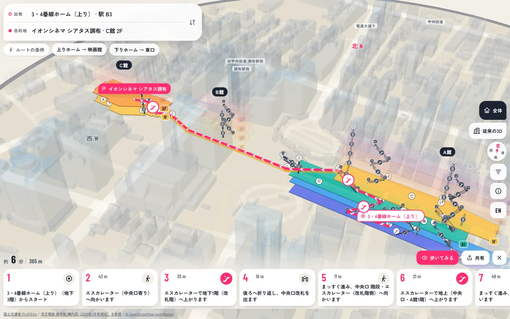
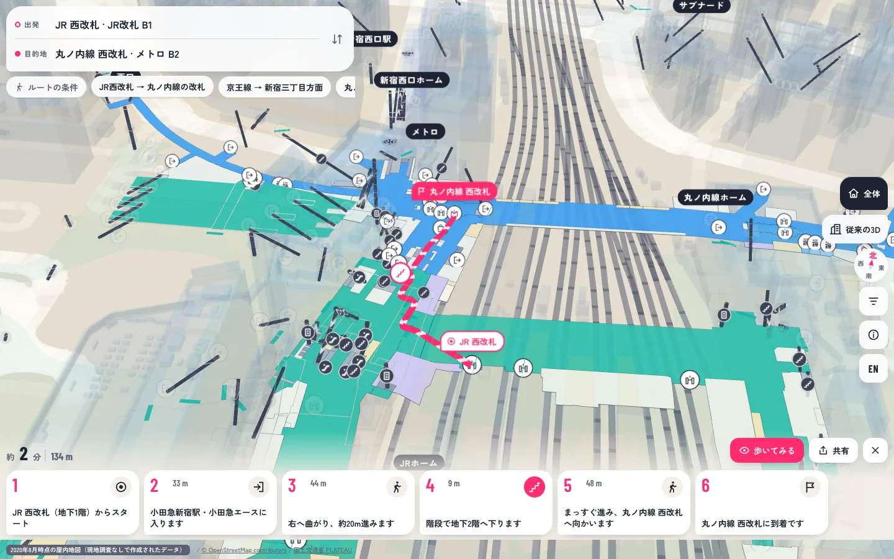
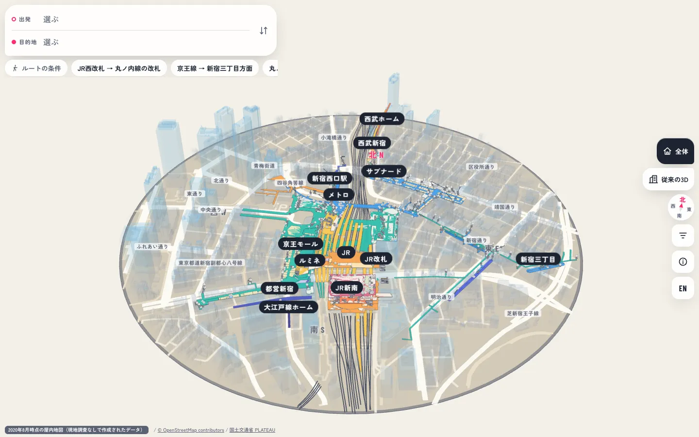

プロダクト/03
都市3DマップChofu / Shinjuku
駅の中を、立体のまま案内する。
駅と駅ビルを、階ごとの平面図ではなく立体で表示し、目的地までの道順を3Dで示す構内マップです。調布駅周辺と新宿駅周辺の2つをつくっています。


課題
平面図では、上下の移動が分からない。
大きな駅で迷うのは、たいてい階をまたぐ場面です。階ごとに分かれた平面図では、どの階段がどこにつながるのかを、頭の中で組み立てなければならないからです。
新宿駅のように、複数の鉄道会社と地下街がつながる場所では、案内図そのものが運営者ごとに分かれています。車いすやベビーカーを使う人は、さらにエレベーターの位置まで調べる必要があります。
つながりが一目で分かる地図が、足りていません。
解決案
回して見られる立体の地図に、道順を重ねる。
駅全体を一つの立体模型として表示し、その上にルートを描きます。上下のつながりは、見れば分かる形にするのがいちばん早いからです。
出発地と目的地を選ぶと、道順が3Dで表示され、手順ごとのカードで確かめられます。「車いす・ベビーカー」「足腰にやさしい」「人混みを避ける」「雨にぬれにくい」といった条件でも探せます。道順はURLやQRコードで共有できます。
読み解く地図ではなく、見て分かる地図を目指しています。

仕組み
公開されているデータを、組み合わせてつくる。
地図は、国や地域が公開しているオープンデータからつくっています。同じつくり方を、ほかの駅にも広げられるようにするためです。
周辺の建物、道路と線路、駅の中の通路や設備を、それぞれ別のデータから取り込み、一つの立体にまとめています。分からない箇所は推測で埋めず、「要確認」として一覧にし、現地で確かめてから反映します。
つくり方を共通にしておくことで、駅が変わっても同じ手順で地図を用意できます。
-
周辺の建物
国土交通省 PLATEAU の3D都市モデル。
-
道路・線路
OpenStreetMap の地図データ。
-
駅の中
新宿は国土交通省の屋内地図オープンデータ、調布は公開されている構内図を参照。

これからの展望
現地で確かめてから、公開する。
デモは、内容を現地で確かめてから公開します。道案内に使う地図は、正しいと確かめられていることが前提だからです。
いまは2つの駅で動く試作の段階です。まず調布で実際に歩いて確認し、その結果を地図に反映します。新宿の屋内地図は2020年8月時点のデータなので、変わった箇所の更新も進めます。
そのうえで、同じ仕組みをほかの駅やまちへ広げていきます。
イチBizアワード2026への応募に向けて制作しているプロトタイプです。地図データ：国土交通省 PLATEAU、国土交通省 新宿駅周辺屋内地図オープンデータ、© OpenStreetMap contributors。
ほかのプロダクト